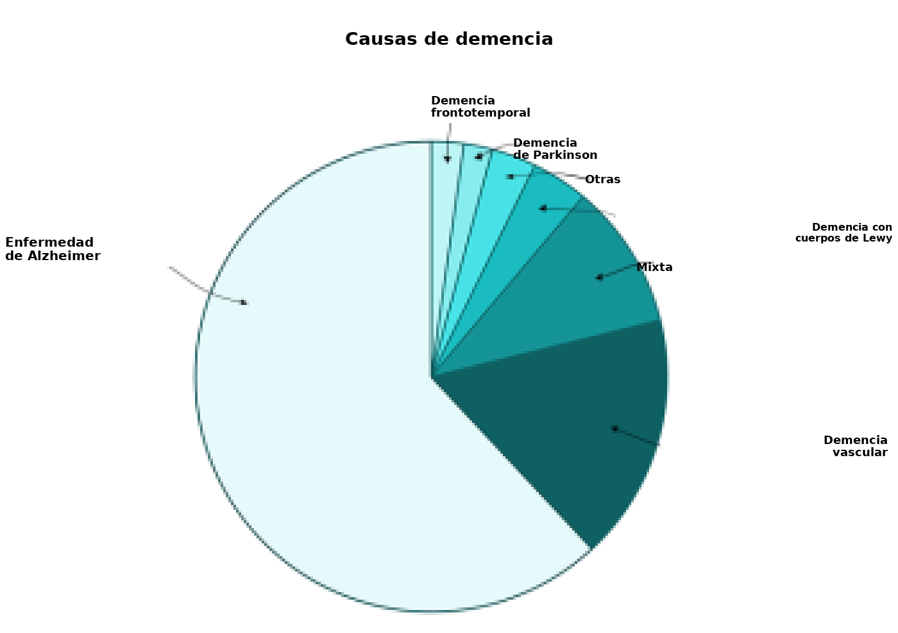
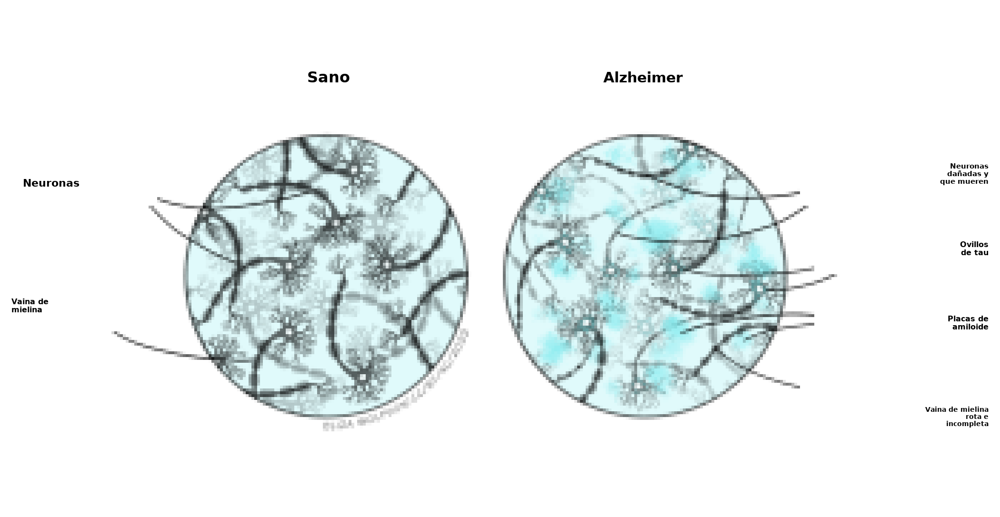
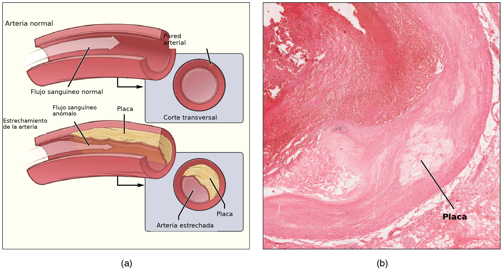

Demencias
Objetivos de aprendizaje
- Conocer los síntomas y las principales causas de la demencia, junto con los enfoques que se usan para diagnosticarla.
- Comprender los síntomas y las consecuencias patológicas de las principales causas de demencia, con foco en la enfermedad de Alzheimer, la demencia vascular y la demencia con cuerpos de Lewy.
- Comprender los distintos enfoques farmacológicos y psicológicos para tratar la enfermedad de Alzheimer.
La demencia es un síndrome asociado con un deterioro progresivo del funcionamiento encefálico, que afecta con mayor frecuencia a la memoria. Los síntomas de la demencia pueden ser muy variados y presentan una gran variabilidad individual. Pueden incluir, entre otros:
- pérdida de memoria
- apatía
- dificultades en el lenguaje
- dificultades en el juicio
- dificultades en el control motor
- velocidad del procesamiento (cognitivo)
Una persona con demencia también puede experimentar paranoia y alucinaciones, y puede resultarle difícil tomar decisiones y vivir de forma independiente. Hoy no hay curas para la demencia. Sin embargo, según el tipo de demencia y la causa subyacente, pueden existir tratamientos que estabilicen los síntomas y enlentezcan la progresión de la enfermedad.
Hay muchas causas distintas de demencia (véase la Tabla 6.2). La más frecuente es la enfermedad de Alzheimer (EA) (véase la Figura 6.12). Aunque algunos síntomas de la demencia, como la pérdida de memoria, podrían esperarse en el envejecimiento habitual, la demencia es un síndrome en el que el deterioro de la función cognitiva va más allá de lo que cabría esperar como consecuencia usual del envejecimiento biológico, y los síntomas suelen ser lo bastante graves como para interferir en las actividades cotidianas.
Tabla 6.2. Causas frecuentes de demencia
|
Tipo de demencia |
Breve descripción de la causa |
|
Enfermedad de Alzheimer |
Degeneración progresiva del tejido encefálico |
|
Demencia vascular |
Bloqueo o reducción del flujo sanguíneo hacia el encéfalo |
|
Demencia mixta |
Varios tipos de demencia contribuyen a los síntomas |
|
Demencia con cuerpos de Lewy |
Agregados anómalos de proteína que se desarrollan dentro de las neuronas |
|
Demencia frontotemporal |
Degeneración progresiva de los lóbulos temporal y frontal del encéfalo |
|
Enfermedad de Parkinson con demencia |
Aparición de síntomas de demencia a medida que la enfermedad progresa |
|
Otras |
Puede incluir afecciones como la enfermedad de Creutzfeldt-Jakob, la depresión, la esclerosis múltiple y el síndrome de Down |
| Credit: Claire Gibson |
Factores de riesgo de la demencia

Aunque la edad es el factor de riesgo de demencia más fuerte que se conoce, la demencia no ocurre como consecuencia inevitable del envejecimiento biológico. Además, no afecta de forma exclusiva a las personas mayores: la demencia de inicio temprano, definida de forma típica como el comienzo de los síntomas antes de los 65 años, explica hasta el 9 % de todos los casos. Se identificaron varios factores de riesgo que aumentan la probabilidad de desarrollar demencia, entre ellos:
- tabaquismo
- consumo excesivo de alcohol
- bajos niveles de actividad física
- colesterol alto
- aterosclerosis
- aislamiento social
- obesidad
- deterioro cognitivo leve (DCL)
También se conocen varios factores de riesgo genéticos para desarrollar demencia, en particular la enfermedad de Alzheimer (véase más abajo). Es probable que la demencia se desarrolle por una combinación de distintos factores de riesgo, algunos modificables (por ejemplo, la alimentación y la actividad física) y otros no (por ejemplo, los genéticos).
Deterioro cognitivo leve
El DCL suele ser una etapa temprana de pérdida de memoria, o de otra capacidad cognitiva, como el lenguaje o la percepción visuoespacial. Las personas con diagnóstico de DCL pueden seguir viviendo de forma independiente y realizar la mayoría de las actividades de la vida diaria. Es importante señalar que las personas con DCL presentan un deterioro de la memoria y/o de otras áreas cognitivas más allá del nivel que esperaríamos ver durante el envejecimiento habitual. El DCL no es un tipo de demencia, pero se asocia con un riesgo más alto de desarrollar demencia, en particular EA (Boyle et al., 2006).
Enfermedad de Alzheimer
La EA es un trastorno neurodegenerativo que lleva al deterioro cognitivo y a la pérdida de memoria. Desde el punto de vista patológico, se caracteriza por la acumulación de placas extracelulares de beta-amiloide (Aβ), ovillos neurofibrilares y neuroinflamación.
Alois Alzheimer la describió por primera vez en 1907. Es la forma más frecuente de demencia y explica entre el 60 y el 80 % de todos los casos. Hoy se estima que 30 millones de personas en el mundo tienen EA, y se predice que esa cifra puede subir hasta 90 millones en 2050. En el Reino Unido hay más de 500 000 personas que viven con EA y, si la prevalencia se mantiene, se prevé que superen el millón en 2025 y los 2 millones en 2050 (Prince et al., 2014). El riesgo de EA aumenta con la edad: afecta a 1 de cada 20 personas menores de 65 años, a 1 de cada 14 mayores de 65 años y a 1 de cada 6 mayores de 80 años. En Inglaterra y Gales, la EA fue una de las principales causas de muerte y explicó más del 10 % de las muertes registradas en 2021 (Office of National Statistics, 2022).
Hay dos tipos de EA: de inicio temprano (familiar; EOAD, por su sigla en inglés) o de inicio tardío (esporádica; LOAD, por su sigla en inglés), que se diagnostican, respectivamente, antes o después de los 65 años. La EA de inicio temprano es rara y explica solo hasta el 5 % de todos los casos de EA. Se piensa que la causan mutaciones en uno de tres genes: la proteína precursora de amiloide (APP), la presenilina 1 (PSEN1) o la presenilina 2 (PSEN2), que llevan a una producción aumentada de placas de Aβ. No se piensa que una sola mutación génica sea la causa de la EA de inicio tardío, más frecuente, sino que esta estaría impulsada por una interacción compleja entre factores genéticos y ambientales. Sin embargo, en la EA de inicio tardío se identificaron mutaciones genéticas que aumentan el riesgo de desarrollar EA; la más fuerte es el gen de la apolipoproteína E4 (APOE4). Más recientemente, los estudios de asociación de todo el genoma implican genes asociados con el sistema inmunitario innato y con la microglía (las células inmunitarias residentes del encéfalo), entre ellos los receptores fagocíticos CD33 y TREM2 (receptor desencadenante expresado en células mieloides 2) (Griciuc & Tanzi, 2021).
Síntomas
La EA se desarrolla lentamente a lo largo de varios años, a veces décadas, de modo que los síntomas no siempre son obvios al principio y también dependen de la etapa de la enfermedad. Los síntomas predominantes son un deterioro progresivo e irreversible de la memoria y de la función cognitiva. Uno de los primeros signos de deterioro cognitivo en la EA es la alteración generalizada de la memoria declarativa, que incluye la incapacidad de aprender y recordar hechos nuevos (déficit de la memoria semántica) y de evocar experiencias pasadas (déficit de la memoria episódica). A menudo se caracteriza por una tasa de olvido anormalmente rápida (Holger, 2013). Entre los síntomas tempranos están olvidar los nombres de objetos y lugares, perder objetos (por ejemplo, las llaves de casa) y la repetición, como hacer la misma pregunta varias veces. Los déficits de la memoria episódica son uno de los mejores indicadores de EA temprana en comparación con otras formas de demencia, y se informaron en la etapa preclínica de la enfermedad.
A medida que la EA progresa aparecen otros déficits cognitivos, entre ellos alteraciones del lenguaje (afasia), de la orientación espacial (por ejemplo, juzgar distancias), de la atención y de las funciones ejecutivas. En cambio, la memoria procedimental (hábitos y habilidades) permanece relativamente conservada hasta las etapas tardías de la enfermedad, cuando hay problemas considerables tanto de la memoria a corto plazo como de la memoria a largo plazo.
La EA también se asocia con diversos síntomas conductuales y psicológicos, entre ellos depresión, ansiedad, apatía, irritabilidad, agresión, desinhibición y curiosidad reducida. Estos cambios forman parte de los síntomas conductuales y psicológicos de la demencia (SCPD), que se ven con frecuencia en las personas con EA, tanto en las etapas tempranas como en las tardías, pero que pueden fluctuar a lo largo de la progresión. La investigación también indica que los SCPD podrían contribuir al deterioro cognitivo a medida que la enfermedad progresa (Gottesman & Stern, 2019).
Las alteraciones de los patrones de sueño y vigilia también son un rasgo frecuente: las personas con EA presentan más somnolencia durante el día y más vigilia durante la noche. A menudo muestran un desplazamiento de su reloj biológico, y tienden a despertarse más tarde y a dormirse más tarde que el grupo de comparación sin demencia. Del mismo modo, en las personas con EA se observan desplazamientos circadianos de los patrones de alimentación: tienden a hacer la comida más abundante en el desayuno y muestran una preferencia aumentada por los alimentos dulces. Sin embargo, una pérdida de peso considerable también es un síntoma frecuente, y puede llevar a la fragilidad y a la debilidad. Con el tiempo, la capacidad de realizar las actividades cotidianas se deteriora cada vez más y, finalmente, lleva a una dependencia permanente de quienes cuidan.
Neuropatología
Rasgos macroscópicos

En el encéfalo de una persona con EA pueden verse varios rasgos patológicos a simple vista (DeTure & Dickson, 2019). Esos rasgos empeoran con la progresión de la enfermedad y pueden visualizarse con imágenes (por ejemplo, resonancia magnética, RM) y con el análisis post mortem. Por ejemplo, la atrofia cortical (adelgazamiento), caracterizada por espacios surcales ensanchados y atrofia de las circunvoluciones, se ve de forma prominente en las cortezas frontal y temporal de las personas con EA. Como resultado de esta atrofia hay una reducción del peso encefálico y un agrandamiento ventricular (véase la Figura 6.13). El hipocampo, una región crucial para el aprendizaje y la memoria, también muestra atrofia, que se piensa debida a la pérdida neuronal. Sin embargo, aunque estos rasgos sugieren que una persona tiene EA, a veces pueden verse en otras demencias y también en personas sin manifestaciones clínicas.
Rasgos microscópicos

Los sellos neuropatológicos que definen la EA son la presencia de placas de Aβ (o placas seniles) y de ovillos neurofibrilares (DeTure & Dickson, 2019). Cabe señalar que esas placas y esos ovillos no son exclusivos de la EA, porque también se ven durante el envejecimiento, pero su densidad y su localización son distintas en la EA.
Al principio, estos rasgos se localizan en estructuras del lóbulo temporal, por ejemplo el hipocampo y la corteza entorrinal, pero pueden extenderse a otras áreas a medida que la enfermedad progresa. Las placas de Aβ consisten en agregados insolubles de Aβ que se encuentran en el parénquima encefálico. Las mutaciones genéticas que se ven en las personas con EA de inicio temprano afectan el procesamiento de la proteína precursora de amiloide (APP), lo que luego lleva a una acumulación de placas de Aβ. Tres complejos enzimáticos, conocidos como secretasa α, secretasa β y secretasa γ, procesan la APP. En condiciones habituales, la APP es cortada por la secretasa α y después por la secretasa γ; en las personas con EA de inicio temprano, la APP es procesada por las secretasas β y γ, y eso produce especies distintas de Aβ mucho más propensas a agregarse.
El otro signo característico de la EA es la presencia de ovillos neurofibrilares compuestos por tau hiperfosforilada. En condiciones habituales, la función de la tau es regular elementos del citoesqueleto de microtúbulos, como la estabilización y la facilitación del transporte axonal. En la EA, la tau se hiperfosforila y forma ovillos neurofibrilares dentro de las neuronas. Esto perturba la estructura de los microtúbulos, causa problemas mayores en la función neuronal y, por último, lleva a la muerte de la neurona.
Otros rasgos de la patología de la EA incluyen una pérdida sináptica que precede a la pérdida neuronal y se correlaciona fuertemente con el deterioro cognitivo (Terry et al., 1991). También se observa una respuesta inflamatoria en los encéfalos de las personas con EA, que incluye la activación de la microglía y de los astrocitos alrededor de las placas de Aβ, y se piensa que contribuye a la patogenia de la enfermedad.
Diagnóstico
Hoy no hay una prueba simple y fiable para diagnosticar la EA. Si se sospecha que una persona tiene EA, se evalúa su capacidad cognitiva con pruebas de memoria, concentración y atención, lenguaje y habilidades de comunicación, orientación, y capacidades visuales y espaciales.
La prueba más usada para medir el deterioro cognitivo es el Mini-Mental State Examination (MMSE), que Marshal Folstein y colegas introdujeron en 1975. El MMSE es una evaluación de 30 puntos, con una serie de preguntas y pruebas que suman puntos si se responden de forma correcta. En concreto, mide la memoria a corto plazo (por ejemplo, memorizar una dirección y evocarla unos minutos después), la atención y la concentración (por ejemplo, deletrear una palabra simple al revés), el lenguaje (por ejemplo, identificar objetos comunes por su nombre), la orientación en el tiempo y en el espacio (por ejemplo, saber dónde se está y qué día de la semana es) y la comprensión y las habilidades motoras (dibujar una forma algo complicada, como copiar un par de pentágonos que se cruzan). Las puntuaciones de 24 o más en general indican una cognición sin deterioro, mientras que las puntuaciones por debajo de ese valor pueden indicar un deterioro cognitivo leve (19-23), moderado (10-18) o grave (9). El MMSE puede usarse, entonces, para indicar qué tan graves son los síntomas de una persona; si se repite, puede evaluar los cambios de la capacidad cognitiva y qué tan rápido progresa su EA. El comienzo de los síntomas cognitivos indica que ya ocurrió una neurodegeneración grave y, por lo tanto, hace falta un diagnóstico en una etapa más temprana.
Además, aunque el deterioro cognitivo es un síntoma de la EA, varias otras afecciones asociadas con la demencia (por ejemplo, la demencia vascular) pueden llevar al deterioro cognitivo y a una reducción de la puntuación del MMSE. Para determinar la probabilidad de EA, las personas también pueden hacerse un estudio por imágenes del encéfalo. Las técnicas de neuroimagen, como la RM, mejoraron de forma marcada la capacidad de diagnosticar a las personas con EA en una etapa más temprana (Kim et al., 2022). La RM estructural se usa para detectar cambios de la estructura encefálica, como la atrofia cerebral y el agrandamiento ventricular. La tomografía por emisión de positrones (PET) puede detectar otros sellos característicos de la EA, como el hipometabolismo encefálico, caracterizado por un menor consumo de glucosa en el encéfalo, y la carga de Aβ, pero estos estudios se usan más en la investigación que como herramienta de diagnóstico clínico.
Tratamientos
Pese a un gran esfuerzo de investigación científica, no hay cura para la EA y las opciones de tratamiento son limitadas: hay unos pocos tratamientos farmacológicos e intervenciones no farmacológicas. Entre los ejemplos de terapias no farmacológicas para mejorar la memoria, las habilidades de resolución de problemas, el estado de ánimo y el bienestar están la terapia de estimulación cognitiva, la rehabilitación cognitiva y el trabajo de reminiscencia o de historia de vida (véase el recuadro). En el Reino Unido hay cuatro tratamientos farmacológicos autorizados para la EA. Son tres inhibidores de la acetilcolinesterasa (AChE) —donepezilo (Aricept), rivastigmina (Exelon) y galantamina (Reminyl)— y el antagonista del receptor de N-metil-D-aspartato (NMDA) memantina (Namenda). Sin embargo, estos fármacos solo producen efectos sintomáticos, al reducir la gravedad de los síntomas cognitivos frecuentes y, aunque pueden aumentar la calidad de vida, no alteran el curso ni la progresión de la enfermedad. También hay algunos fármacos que pueden prescribirse para los síntomas de los SCPD, entre ellos los antipsicóticos risperidona o haloperidol, o antidepresivos si se sospecha que la depresión es una causa de la ansiedad. Aunque en el Reino Unido no hay tratamientos modificadores de la enfermedad autorizados, en 2021 la Administración de Alimentos y Medicamentos de los Estados Unidos (FDA) aprobó el uso de aducanumab (Aduhelm), un anticuerpo monoclonal diseñado para unirse a la Aβ agregada y eliminarla, como tratamiento de la EA, aunque todavía hay incertidumbres sobre los beneficios que puede aportar. Por lo tanto, siguen haciendo falta intervenciones eficaces para detener o revertir la neurodegeneración que se ve en la EA.
Enfoques psicológicos para la demencia
Los enfoques psicológicos buscan mejorar las capacidades cognitivas (por ejemplo, el entrenamiento o la estimulación cognitiva), favorecer el bienestar emocional (por ejemplo, la planificación de actividades y la terapia de reminiscencia), reducir los síntomas conductuales (por ejemplo, la musicoterapia) y promover el funcionamiento cotidiano (por ejemplo, la terapia ocupacional). Aunque estos enfoques no previenen ni retrasan la progresión de la causa subyacente de la demencia, pueden mejorar la calidad de vida de la persona y de quienes la cuidan (Logsdon et al., 2007; Woods et al., 2018). Algunos ejemplos concretos:
- Entrenamiento o estimulación cognitiva. Adaptado de programas de rehabilitación diseñados para personas con trastornos neurológicos (por ejemplo, un accidente cerebrovascular (ACV) o un traumatismo craneoencefálico (TCE)), su objetivo es mejorar la memoria, la atención y la función cognitiva general. De forma típica incluye estrategias como el entrenamiento de la memoria, la resolución general de problemas (con juegos y acertijos), el uso de recursos mnemotécnicos y/o el uso de ayudas externas de memoria, como cuadernos y calendarios.
- Terapia de reminiscencia. Consiste en conversar sobre acontecimientos y experiencias del pasado de una persona, con el objetivo de estimular recuerdos y actividad mental, y de mejorar el bienestar. Suele apoyarse en ayudas externas, como fotografías, música y objetos, y puede incluir una conversación directa con la persona o un grupo familiar o social más amplio.
- Musicoterapia o arteterapia. Busca mejorar el estado de ánimo, el nivel de alerta y la participación de las personas con demencia. El contacto con la música y/o el arte puede ayudar a evocar recuerdos, estimular la comunicación y construir confianza, y todo eso repercute de forma positiva en la calidad de vida. Este enfoque permite la autoexpresión y la participación, y se mostró que reduce la agitación y la conducta angustiante.
Inhibidores de la colinesterasa
La acetilcolina (ACh) es un neurotransmisor producido en las neuronas colinérgicas, con una función en la memoria, el pensamiento, el lenguaje y la atención. En la EA hay una pérdida de neuronas colinérgicas, en particular en el hipocampo, la corteza y la amígdala, que lleva a una reducción de la ACh. La enzima AChE degrada la ACh y, por lo tanto, se cree que los inhibidores de la AChE (donepezilo, rivastigmina y galantamina) tratan los síntomas cognitivos de la EA al aumentar los niveles de ACh en el encéfalo. Estos fármacos se usan para tratar los síntomas de la EA leve a moderada y pueden llevar a una mejoría del pensamiento, la memoria, la comunicación o las actividades cotidianas. En algunas personas no se ve una mejoría notable, pero sus síntomas no empeoran tan rápido como se esperaría. Algunos efectos adversos frecuentes de los inhibidores de la AChE son diarrea, náuseas o vómitos, dificultad para dormir, calambres musculares y cansancio.
Memantina
La memantina es el fármaco más reciente aprobado para el tratamiento de la EA en el Reino Unido. Desde el punto de vista farmacológico, es un antagonista no competitivo del receptor NMDA. En la EA, se piensa que la actividad excesiva del receptor NMDA, debida a un exceso de glutamato, produce muerte neuronal y también neurotoxicidad dependiente del calcio; por lo tanto, se piensa que la memantina previene estos efectos tóxicos del glutamato y reduce los síntomas de la EA. Se recomienda para las personas con EA grave, o para quienes tienen EA moderada y no pueden usar inhibidores de la AChE, pero a menudo se usa en combinación con estos fármacos. Los efectos adversos frecuentes incluyen somnolencia, mareos, constipación, cefalea y dificultad para respirar.
Demencia vascular
La demencia vascular es la segunda causa más frecuente de demencia después de la EA, y ocurre como consecuencia de una reducción del flujo sanguíneo hacia el encéfalo. Todas las células del encéfalo necesitan un suministro constante de oxígeno y de nutrientes para funcionar, y estos llegan por el suministro sanguíneo de la red vascular encefálica. Cualquier interrupción o reducción del flujo sanguíneo dentro del encéfalo, por ejemplo como consecuencia de un ACV, puede alterar la función de las células encefálicas, producir muerte celular y desorganizar los procesos cognitivos y motores.
Los síntomas de la demencia vascular tienden a variar de forma considerable entre las personas, porque dependen de la localización del daño, y pueden desarrollarse de forma súbita, por ejemplo después de un ACV, o de forma más gradual, como en la enfermedad de pequeño vaso. Algunos síntomas de la demencia vascular pueden ser similares a los de otros tipos de demencia. Sin embargo, aunque la pérdida de memoria es típica de las etapas tempranas de la EA, no suele ser el síntoma temprano principal de la demencia vascular. Los síntomas cognitivos más frecuentes en las etapas tempranas de la demencia vascular incluyen problemas de planificación, organización y toma de decisiones, una menor velocidad del procesamiento cognitivo, falta de atención y períodos breves de confusión. Hay tres tipos principales de demencia vascular:
- Demencia vascular subcortical. Se informa que es el tipo más frecuente de demencia vascular. Ocurre como consecuencia de una enfermedad de las arterias muy pequeñas que están en las regiones subcorticales del encéfalo, y se la llama enfermedad de pequeño vaso (Tomimoto, 2011). Con el tiempo, las paredes de estos vasos se engrosan y, por lo tanto, la luz del vaso se estrecha, lo que reduce el flujo sanguíneo (Figura 6.15) y produce áreas de daño encefálico llamadas «infartos». Las estructuras subcorticales del encéfalo son importantes para procesar actividades complejas, como la memoria y las emociones. Puede distinguirse de la EA porque se asocia con infartos más extensos de la sustancia blanca y con una atrofia menos grave del hipocampo.
- Demencia multiinfarto. Ocurre cuando una persona experimenta una serie de mini-ACV, a los que a veces se llama ataques isquémicos transitorios (AIT). Esos mini-ACV causan una reducción temporaria del flujo sanguíneo hacia el encéfalo y, aunque la persona puede experimentar solo síntomas temporarios en el momento del mini-ACV, pueden generar infartos. Con el tiempo, si se desarrolla una cantidad de infartos, el daño acumulado puede ser suficiente para que la persona desarrolle síntomas de demencia (McKay & Counts, 2017).
- Demencia posterior a un ACV. Alrededor del 20 % de las personas que experimentan un ACV isquémico va a desarrollar demencia en los 6 meses siguientes. Un ACV isquémico es causado por un coágulo en un vaso sanguíneo, que reduce el flujo dentro de ese vaso cerebral, y produce pérdida de tejido y disfunción encefálica (Mijajlović et al., 2017). Los factores que aumentan el riesgo de enfermedad cardiovascular y de ACV isquémico, como la hipertensión y el colesterol alto, también aumentan el riesgo de deterioro cognitivo posterior al ACV.

Demencia con cuerpos de Lewy
La demencia con cuerpos de Lewy (DLB, por su sigla en inglés) es una enfermedad progresiva asociada con depósitos anómalos de una proteína llamada alfa-sinucleína en células neuronales y no neuronales del encéfalo (Outeiro et al., 2019). Esos depósitos, llamados cuerpos de Lewy por FH Lewy, el médico alemán que los identificó por primera vez, afectan el funcionamiento de los neurotransmisores, en particular la ACh y la dopamina, y eso a su vez altera el funcionamiento cognitivo, el movimiento, la conducta y el estado de ánimo. La DLB causa una variedad de síntomas, algunos compartidos con la EA y otros con la enfermedad de Parkinson, y por eso es frecuente que se la diagnostique de forma errónea (véase el recuadro sobre los métodos que se usan para diagnosticar la demencia). Sin embargo, los síntomas asociados con más frecuencia con la DLB que con otras causas de demencia incluyen alteraciones del sueño, alucinaciones visuales y síntomas motores. Tener un familiar con DLB también puede aumentar el riesgo de una persona, aunque la demencia con cuerpos de Lewy no se considera una enfermedad genética. Se asociaron con un riesgo aumentado variantes de tres genes —APOE, alfa-sinucleína (SNCA) y glucocerebrosidasa (GBA)—, pero en la mayoría de los casos de DLB la causa se desconoce.
Evaluación de la demencia
No hay una sola prueba para la demencia, pero el personal médico usa información de distintos enfoques (enumerados abajo) para determinar si una persona está experimentando demencia y, si es así, cuál es la causa subyacente. Comprender la causa subyacente de la demencia de una persona es importante, porque va a orientar los enfoques de tratamiento y va a determinar la progresión probable de la enfermedad y de los síntomas asociados.
- Historia clínica, para establecer cómo los síntomas afectan la vida diaria y para asegurarse de que otras afecciones médicas existentes (por ejemplo, la hipertensión) estén tratadas de forma adecuada.
- Pruebas de capacidad cognitiva. De forma típica incluyen pruebas neuropsicológicas de memoria, atención, resolución de problemas y orientación en el tiempo y en el espacio.
- Análisis de sangre, para buscar otras afecciones que puedan causar síntomas parecidos a los de la demencia. Esos análisis suelen evaluar la función del hígado, de los riñones y de la tiroides.
- Los estudios por imágenes del encéfalo pueden detectar signos de daño encefálico que ayuden a identificar la causa subyacente de la demencia. Por ejemplo, la RM puede dar información más detallada sobre el daño de los vasos sanguíneos, que podría indicar demencia vascular, o mostrar atrofia en áreas encefálicas específicas. Por ejemplo, la atrofia del hipocampo es un indicador fuerte de EA, mientras que la atrofia de los lóbulos frontal y temporal es más típica de la demencia frontotemporal. Pueden usarse otros tipos de estudio, por ejemplo la tomografía computarizada (TC), para descartar la presencia de un tumor encefálico. Los estudios de investigación clínica tienden a usar más las imágenes, como la PET, para identificar marcadores de interés, por ejemplo la glucosa, en relación específica con la progresión de la enfermedad y/o con la evaluación de posibles tratamientos nuevos. Es probable que la mayoría de las personas no reciba un estudio por imágenes del encéfalo si las otras pruebas y evaluaciones muestran que la demencia es un diagnóstico probable.
Otras demencias
Puede diagnosticarse demencia mixta cuando una persona tiene más de una causa subyacente de demencia. Lo más frecuente es la coexistencia de EA y demencia vascular, aunque son posibles otras combinaciones, como EA y DLB. La demencia mixta tiende a ser más frecuente en los grupos de más edad (mayores de 75 años), y se informa que explica el 10 % de todos los diagnósticos de demencia.
La demencia frontotemporal (DFT) es una forma rara de demencia, a la que a veces se llama enfermedad de Pick o demencia del lóbulo frontal. De forma típica ocurre a una edad más temprana que otras formas de demencia: el 60 % de los casos ocurre en personas de 45 a 64 años. La DFT es consecuencia de una degeneración selectiva de los lóbulos frontal y temporal. En las etapas tempranas, las personas tienden a mostrar cambios de la personalidad y de la conducta, y/o afasia. La afasia es la dificultad con el lenguaje o el habla y, en la DFT, suele deberse a un daño del lóbulo temporal izquierdo. En comparación con trastornos como la EA, las personas con DFT tienden a tener un buen rendimiento de la memoria en las etapas tempranas, aunque este empeora de forma progresiva a medida que la enfermedad avanza.
Ideas clave
- La demencia es un síndrome complejo, con distintas causas subyacentes y una gran variabilidad en la presentación de los síntomas.
- Los síntomas asociados con la demencia de forma típica involucran procesos cognitivos, en particular la memoria, pero también pueden afectar otras conductas, el control motor, el sueño y el estado de ánimo.
- No hay curas para la demencia, que es progresiva y cuyos síntomas empeoran con el tiempo. Sin embargo, algunas de las causas más frecuentes, es decir, la EA, sí tienen tratamientos que mostraron ser eficaces para enlentecer y estabilizar la progresión de los síntomas.
- Los enfoques psicológicos para la demencia también son importantes, porque se demostró que mejoran el bienestar y la calidad de vida no solo de la persona, sino también de quienes participan en su cuidado.
- Se invierte una gran cantidad de investigación en comprender mejor la patología que subyace a la demencia y en identificar enfoques nuevos de tratamiento.
Referencias y lecturas complementarias
Boyle, P.A., Wilson, R.S., Aggarwal, N.T., Tang, T., & Bennett, D. A. (2006). Mild cognitive impairment: Risk of Alzheimer disease and rate of cognitive decline. Neurology, 67(3), 441-445. https://doi.org/10.1212/01.wnl.0000228244.10416.20
DeTure, M.A., & Dickson, D.W. (2019). The neuropathological diagnosis of Alzheimer’s disease. Molecular Neurodegeneration, 14(32), 1-18. https://doi.org/10.1186/s13024-019-0333-5
Gottesman, R.T., & Stern, Y. (2019). Behavioral and psychiatric symptoms of dementia and rate of decline in Alzheimer’s disease. Frontiers in Pharmacology, 10, 1062. https://doi.org/10.3389/fphar.2019.01062
Griciuc, A., & Tanzi, R.E. (2021). The role of innate immune genes in Alzheimer’s disease. Current Opinion in Neurology, 34(2), 228-236. https://doi.org/10.1097/wco.0000000000000911
Holger, J. (2013). Memory loss in Alzheimer’s disease. Dialogues Clinical Neuroscience, 15(4), 445-454. https://doi.org/10.31887%2FDCNS.2013.15.4%2Fhjahn
Kim, J., Jeong, M., Stiles, W.R., & Choi, H.S. (2022). Neuroimaging modalities in Alzheimer’s disease: Diagnosis and clinical features. International Journal of Molecular Sciences, 23(11), 6079. https://doi.org/10.3390/ijms23116079
Logsdon, R.G., McCurry, S.M., & Teri, L. (2007) Evidence-based interventions to improve quality of life for individuals with dementia. Alzheimer’s care today, 8(4), 309-318. https://www.ncbi.nlm.nih.gov/pmc/articles/PMC2585781/
McKay, E., & Counts, S.E. (2017) Multi-infarct dementia: A historical perspective. Dementia and Geriatric Cognitive Disorders Extra, 7, 160-171. https://doi.org/10.1159/000470836
Mijajlović, M.D., Pavlović, A., Brainin M., Heiss, W.-D., Quinn, T.J., & Ihle-Hansen, H.B. (2017) Post-stroke dementia – a comprehensive review. BMC Medicine, 15(11), 1-12. https://doi.org/10.1186/s12916-017-0779-7
Office of National Statistics (2022, July 1). Deaths Registered in England and Wales, 2021. https://www.ons.gov.uk/peoplepopulationandcommunity/birthsdeathsandmarriages/deaths/bulletins/deathsregistrationsummarytables/2021
Outeiro, T.F., Koss D.J., Erskine, D., Walker, L., Kurzawa-Akanbi, M., & Burn, D. (2019) Dementia with Lewy bodies: an update and outlook. Molecular Neurodegeneration, 14(5), 1-18. https://doi.org/10.1186/s13024-019-0306-8
Prince, M., Knapp, M., Guerchet, M., McCrone, P., Prina, M., Comas-Herrera, M., Wittenberg, A., Adelaja, R., Hu, B., King, B., Rehill, D., & Salimkumar, D. (2014). Dementia UK: Update. Alzheimer’s Society. http://www.alzheimers.org.uk/dementiauk
Terry, R.D., Masliah, E., Salmon, D.P., Butters, N., DeTeresa, R., Hill, R., Hansen, L.A., & Katzman, R. (1991). Physical basis of cognitive alterations in Alzheimer’s disease: synapse loss is the major correlate of cognitive impairment. Annals of Neurology, 30(4), 572–80. https://doi.org/10.1002/ana.410300410
Tomimoto, H. (2011). Subcortical vascular dementia. Neuroscience Research, 71(3), 193-199. https://doi.org/10.1016/j.neures.2011.07.1820
Woods, B., O’Philbin, L., Farrell, E.M., Spector, A.E., & Orrell, M. (2018) Reminiscence therapy for dementia. Cochrane Database of Systematic Reviews, 3, CD001120. https://doi.org/10.1002%2F14651858.CD001120.pub3
un grupo de síntomas relacionados